MOBS
Una criatura (mob, derivado de mobile, en inglés) es una entidad viviente en el juego, que puede desplazarse, realizar acciones y recibir o infligir daño. Los diferentes tipos de criaturas a menudo tienen una IA y un botín único.
Se generan de varias formas, dependiendo del nivel de luz y entorno, y suelen aparecer tras la generación de chunks. Nunca se generan en bloques transparentes, en piedra base o en bloques de menos de un bloque completo de altura (como losas en posición inferior, botones, camas, antorchas, palancas, vallas, puertas de vallas, etc.).

AXOLOTE
7 (14HP)
(14HP)
NINGUNO
LUSH CAVES

ALLAY
10(20HP)
NINGUNO
MANSIONES DEL BOSQUE, PUESTOS DE SAQUEADORES
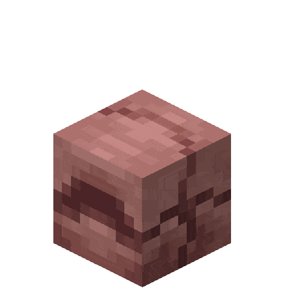
ARMADILLO
6(12HP)
ESCAMA DE ARMADILLO(AL CEPILLARLO)
BIOMA DE SABANA, MESA/BADLANDS


BACALAO/SALMON/PEZ TROPICAL
1.5(3HP)
PESCADO CRUDO
BIOMAS DE AGUA, RIOS, LAGOS

CABALLO ESQUELETO
VARIA 7.5-15(15-30HP)
NINGUNO
TRAMPA DE ESQUELETOS(DURANTE UNA TORMENTA)

CALAMAR
5(10HP)
SACO DE TINTA
BIOMAS DE AGUA, RIOS, LAGOS

CALAMAR BRILLANTE
5(10HP)
SACO DE TINTA BRILLANTE
BIOMAS DE AGUA, RIOS, LAGOS
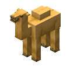
CAMELLO
16(32HP)
CUERO
ALDEAS DEL DESIERTO Y SABANA

CERDO
5(10HP)
CHULETA DE CERDO CRUDA
BIOMAS DE PRADERA/LLANURA Y BOSQUES(DÍA)
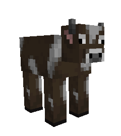
VACA
5(10HP)
CUERO, CARNE DE RES CRUDA
BIOMAS DE PRADERA/LLANURA Y BOSQUES(DÍA)
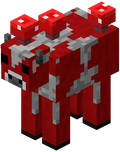
CHAMPIVACA
5(10HP)
CUERO, CARNE DE RES CRUDA
BIOM,A DE ISLA DE CHAMPÍÑONES

GALLINA
2(4HP)
PLUMAS, CARNE DE POLLO CRUDA
BIOMAS DE PRADERA/LLANURA Y BOSQUES(DÍA)
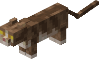
GATO
5(10HP)
NINGUNO(A VECES REGALAN OBJETOS)
ALDEAS

MURCIELAGO
3(6HP)
NINGUNO
CUEVAS

OVEJA
4(8HP)
LANA(1 BLOQUE)
BIOMAS DE PRADERA/LLANURA Y BOSQUES(DÍA)
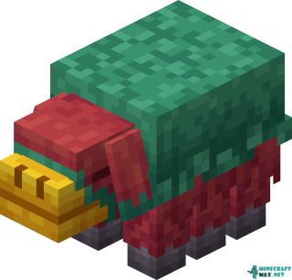
SNIFFER
7(14HP)
NINGUNO
DEBE ECLOSIONARSE DE UN HUEVO DE SNIFFER ENCONTRADO EN RUINAS OCEANICAS

STRIDER
10(20HP)
HILO
NETHER(EN LAVA)

LORO
3(6HP)
PLUMA
BIOMAS DE JUNGLA

CONEJO
1.5(3HP)
PIEL DE CONEJO, PATA DE CONEJO, CARNE DE CONEJO CRUDA
BIOMAS DE LLANURA, DESIERTO, NIEVE

TORTUGA
15(30HP)
HIERBA MARINA(AL MORIR BEBE), CAPARAZON DE SCUTE
PLAYAS DE ARENA
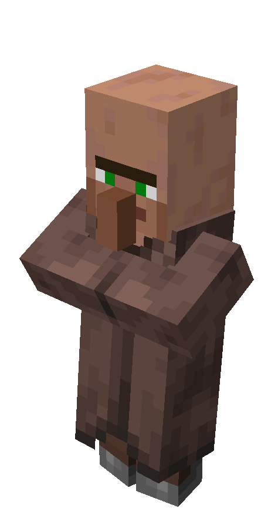
ALDEANO/VENDEDOR AMBULANTE
10(20HP)
NINGUNO
ALDEAS(EN CASO DEL VENDEDOR AMBULANTE SE GENERA NATUALMENTE CERECA DEL JUGADOR)


CABALLO/BURRO
VARIA 7.5-15(15-30HP)
CUERO
ALDEAS, SABANA, PLANICIES

ABEJA
5(10HP)
NINGUNO
CAMPOS DE FLORES, NATURALMENTE EN TRONCOS DE ARBOLES
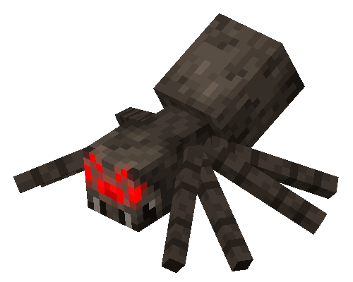
ARAÑA
8(16HP)
HILO, OJO DE ARAÑA
CUEVAS, NOCHE(NIVEL DE LUZ 7 O INFERIOR)
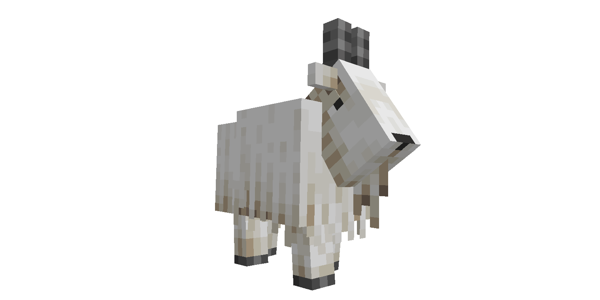
CABRA
5(10HP)
NINGUNO(DA LECHE AL SER ORDEÑADA)
BIOMAS DE MONTAÑA EXTREMA

DEDLFIN
5(10HP)
PESCADO CRUDO
OCEANOS
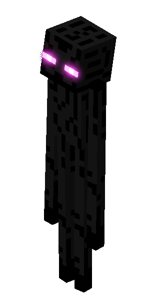
ENDERMAN
20(40HP)
ENDER PEARL
CUEVAS, NOCHE(NIVEL DE LUZ 7 O INFERIOR)

GOLEM DE HIERRO
50(100HP)
LINGOTE DE HIERRO, FLOR ROJA
ALDEAS( SI HAY SUFICIENTES ALDEANOS) O CREADOS POR EL JUGADOR
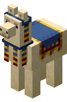
LLAMA
VARIA 7.5-15(15-30HP)
CUERO
BIOOMAS DE MONTAÑA Y SABANA
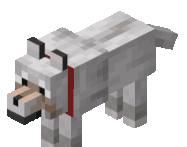
LOBO(NO DOMESTICADO)
4(8HP)
NINGUNO
BOSQUES
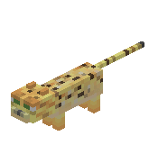
OCELOTE
5(10HP)
NINGUNO
BIOMAS DE JUNGLA

OSO POLAR
15(30HP)
PESCADO CRUDO
BIOMAS DE NIEVE(TAIGA FRIA Y TUNDRA CONGELADA)

PIGLIN ZOMBIE
11(22HP)
PEPITA DE ORO, CARNE PODRIDA, LINGOTE DE ORO
LA MAYORIA DE LOS BIOMAS DEL NETHER Y AL CRUZAR PORTALES
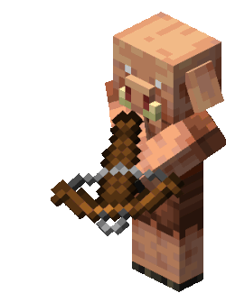
PIGLIN
8(16HP)
PEPITA DE ORO(AL MATARLO SIN ENFURECER), BALLESTA
BIOMAS DE CRIMSOM, BOSQUE DISTORCIONADO Y BASTIONS
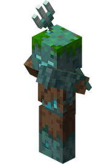
AHOGADO
10(20HP)
CARNE PODRIDA, COBRE, TRIDENTE
OCEANOS Y RÍOS(BAJO EL AGUA)

LEPISMA
5(10HP)
NINGUNO
STRONHOLD(ENTRE LA PIEDRA INFECTADA)

ARAÑA DE CUEVA
6(12HP)
HILO, OJO DE ARAÑA
MINAS ABANDONADAS(EN GENERADORES)

BLAZE
10(20HP)
VARA DE BLAZE
FORTALEZAS DEL NETHER( EN GENERADORES)
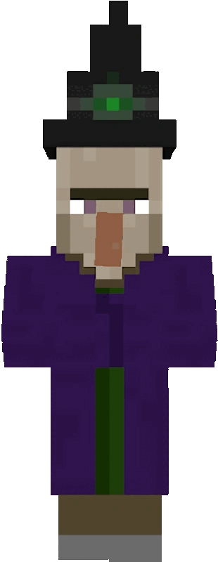
BRUJA
13(26HP)
REDSTONE, BOTELLAS, GLOWSTONE, PALO, AZUCAR
CUEVAS, NOCHE(NIVEL DE LUZ 7 O INFERIOR)
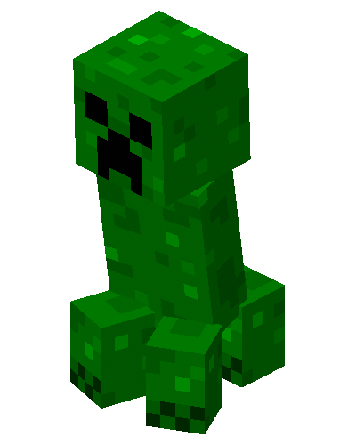
CREEPER
10(20HP)
POLVORA
CUEVAS, NOCHE(NIVEL DE LUZ 7 O INFERIOR)

CUBO DE MAGMA(GRANDE)
8(16HP)
CREMA DE MAGMA
FORTALEZAS DEL NETHER, BIOMAS DE BASALTO Y BASTIONS(EN GENERADORES)

RAVAGER
50(100HP)
MONTURA
DURANTE RAIDS

ESQUELETO
10(20HP)
HUESO, FLECHAS, ARCO
CUEVAS, NOCHE(NIVEL DE LUZ 7 O INFERIOR)
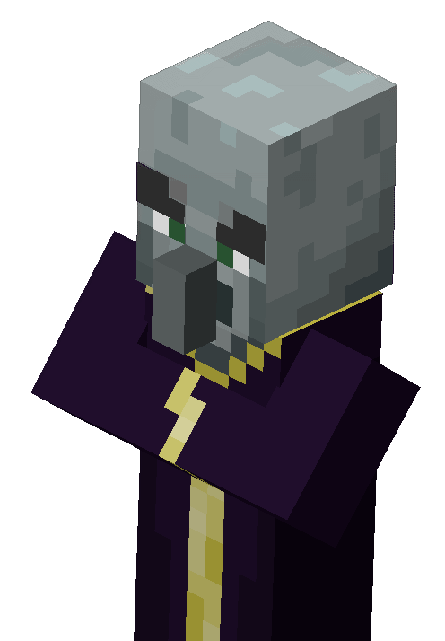
EVOCADOR
12(24HP)
TOTEM DE LA AINMORTALIDAD, ESMERALDA
DURANTE RAIDS Y MANSIONES DEL BOSQUE
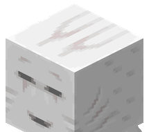
GHAST
5(10HP)
POLVORA, LAGRIMA DE GHAST, DISCO(SI LE REGRESAS SU ATAQUE)
BIOMAS ABIERTOS DEL NETHER(VALLE DE ALMAS, YERMO DEL NETHER)

GUARDIAN ANCIANO
40(80HP)
PRISMARINA, FRAGMENTO DE PRISMARINA, PESCADO
DENTRO DEL MONUMENTO OCEANICO
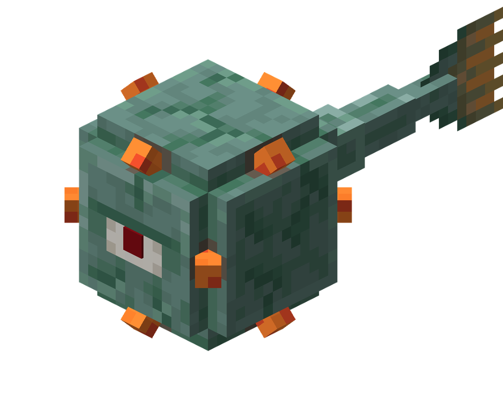
GUARDIAN
15(30HP)
PRISMARINA, FRAGMENTO DE PRISMARINA, PESCADO
DENTRO DEL MONUMENTO OCEANICO
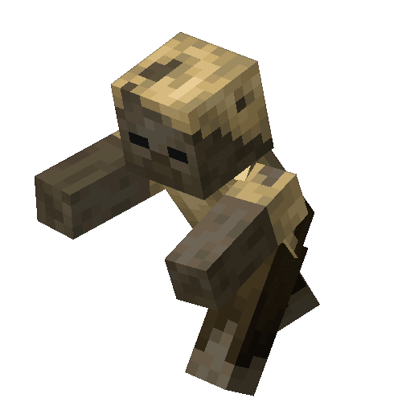
HUSK
10(20HP)
CARNE PODRIDA, HIERRO, PAPA, ZAZNAHORIA
BIOMAS DEL DESIERTO(NOCHE, CUEVAS)
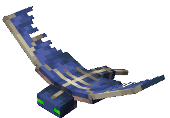
PHANTOM
10(20HP)
MEMBRANA DE PHANTOM
SOBRE LA CABEZA DEL JUGADOR(TRAS TRES O MAS NOCHES SIN DORMIR)
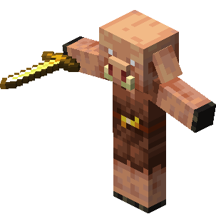
PIGLIN
8(16HP)
PEPITA DE ORO(AL MATARLO SIN ENFURECER), BALLESTA
BIOMAS DE CRIMSOM,BOSQUE DISTORCIONADO Y BASTIONS
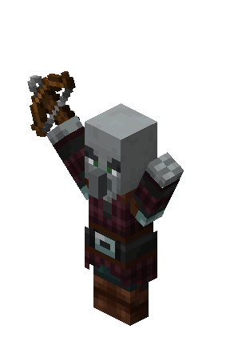
PILLAGER
12(24HP)
ESMERALDA, BALLESTA
DURANTE RAIDS, MANSIONES DEL BOSQUE, PUESTOS DE SAQUEADORES Y PATRULLASD
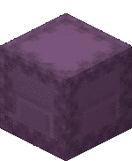
SHULKER
15(30HP)
CAPARAZON DED SHULKER
DENTRO DE LAS END CITYS
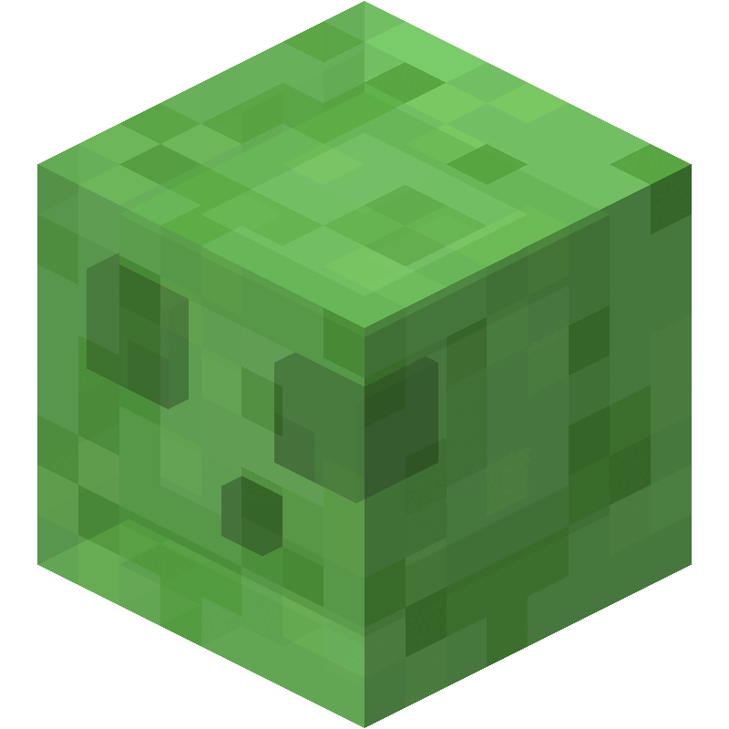
SLIME(GRANDE)
8(16HP)
BOLA DE SLIME
BIOMAS DE PANTANO(NOCHE) O EN CHUNKS DE SLIME SUBTERRANEOS
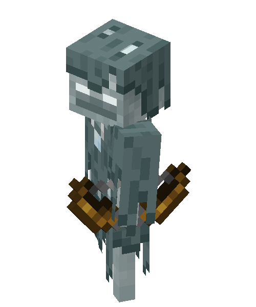
STRAY
10(20HP)
HUESOS, FLECHAS
BIOMAS DE NIEVE Y TUNDRA(NOCHE, CUEVAS)

VEX
7(14HP)
NINGUNO
DURANTE RAIDS Y MANSIONES DEL BOSQUE(INVOCADAS POR EL EVOCADOR)
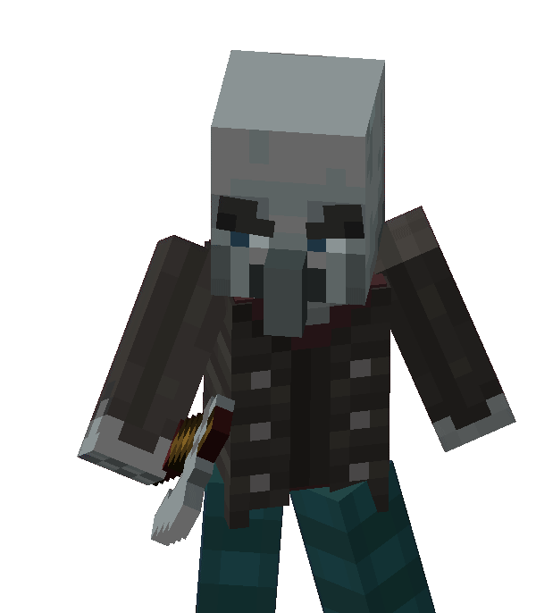
VINDICADOR
12(24HP)
ESMERALDA, HACHA DE HIERRO
DURANTE RAIDS Y MANSIONES DEL BOSQUE

WITHER SKELETON
10(20HP)
CARBON, ESPADA DE PIEDRA, CABEZA DE WITHER
FORTALEZAAS DEL NETHER
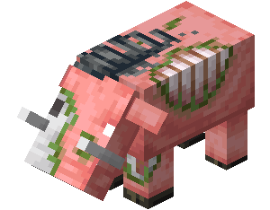
ZOGLIN
20(40HP)
CARNE DE CERDO CRUDA
BOSQUE CARMESI( GENERACION DE HOGLIN QUE LUEGO ZOMBIFICA EN EL OVERWOLD)

ZOMBIE
10(20HP)
CARNE PODRIDA, HIERRO, PAPA, ZAZNAHORIA
CUEVAS, NOCHE(NIVEL DE LUZ 7 O INFERIOR)

BREEZE
10(20HP)
CARGAS DE VIENTO, VARA DE BREEZE
EN LAS CAMARAS DE DESAFIO(TRIAL CHAMBERS)

ENDER DRAGON
100(200HP)
HUEVO DE DRAGON, 50 NIVELES DE EXP O MAS
ISLA PIRNCIPAL DEL END
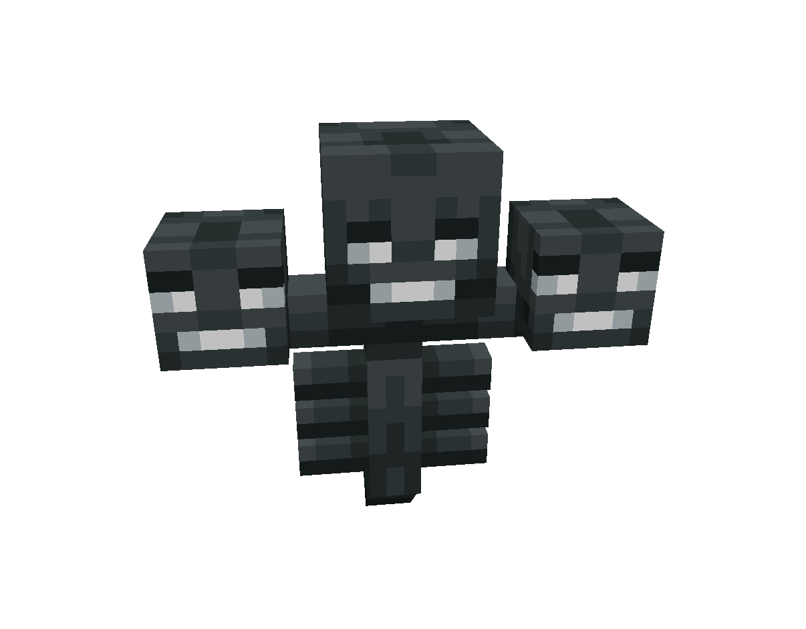
WITHER
JAVA EDITION 150(300HP)
BEDROCK EDITION 300(600HP)
ESTRELLA DE NETHER, ROSA DE WITHER(AL MATAR A OTRO MOB CON SU PROPIO ATAQUE)
INVOCADO POR EL JUGADOR
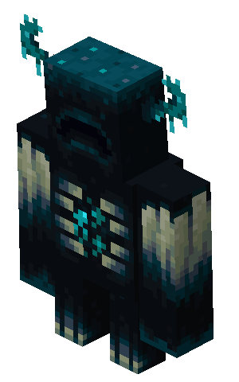